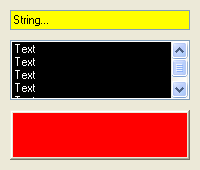

SetGadgetColor()
Syntax
SetGadgetColor(#Gadget, ColorType, Color)Description
Changes a color attribute on the given gadget.
Parameters
#Gadget The gadget to use. ColorType The kind of color attribute to change. This can be one of the following values. See the documentation of each gadget for the supported color attributes: #PB_Gadget_FrontColor : Gadget text #PB_Gadget_BackColor : Gadget background #PB_Gadget_LineColor : Color for gridlines #PB_Gadget_TitleFrontColor: Text color in the title (for CalendarGadget()) #PB_Gadget_TitleBackColor : Background color in the title (for CalendarGadget()) #PB_Gadget_GrayTextColor : Color for grayed out text (for CalendarGadget())Color The new color for the attribute. RGB() can be used to get a valid color value. To remove the custom color and go back to the default system color, set the 'Color' parameter to -1.
Return value
None.
Remarks
This function is supported by the following gadgets:
- CalendarGadget()
- ContainerGadget()
- DateGadget()
- EditorGadget()
- ExplorerListGadget()
- ExplorerTreeGadget()
- HyperLinkGadget()
- ListViewGadget()
- ListIconGadget()
- MDIGadget()
- ProgressBarGadget() (Windows only)
- ScrollAreaGadget()
- SpinGadget()
- StringGadget()
- TextGadget()
- TreeGadget()
Note: With activated Windows XP style the color settings will probably be ignored or overwritten by the style.
Example
If OpenWindow(0, 0, 0, 200, 170, "SetGadgetColor", #PB_Window_SystemMenu | #PB_Window_ScreenCentered) StringGadget(0, 10, 10, 180, 20, "String...") ListViewGadget(1, 10, 40, 180, 60) For i = 0 To 4 AddGadgetItem(1, -1, "Text") Next i ContainerGadget(2, 10, 110, 180, 50, #PB_Container_Raised) SetGadgetColor(0, #PB_Gadget_BackColor, $00FFFF) SetGadgetColor(1, #PB_Gadget_FrontColor, $FFFFFF) SetGadgetColor(1, #PB_Gadget_BackColor, $000000) SetGadgetColor(2, #PB_Gadget_BackColor, $0000FF) Repeat Until WaitWindowEvent() = #PB_Event_CloseWindow EndIf

See Also
GetGadgetColor(), GetGadgetItemColor(), SetGadgetItemColor()
Supported OS
All